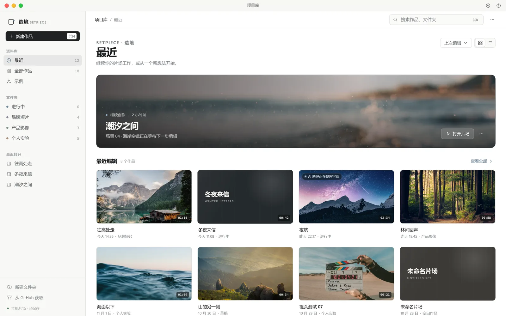
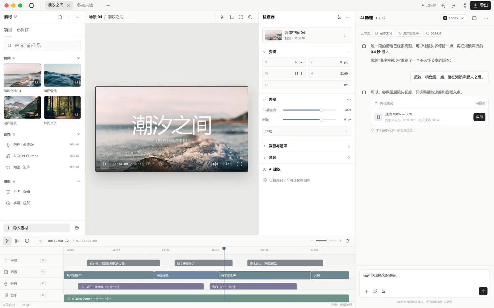
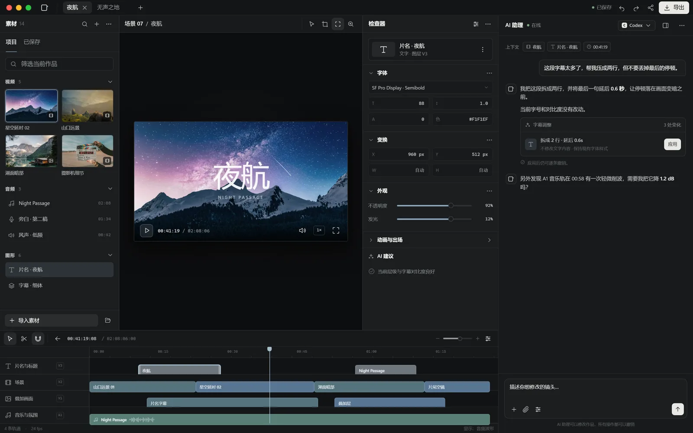

-
01
让智能体搭起镜头
Codex、Claude Code 或任何编程智能体把影片写成
film.html。页面里的每个元素都能成为画面的一部分。 -
02
在同一个画面里修改
选中图层、拖动元素、调整字幕，在时间线上移动、裁剪、分割和吸附。 改动即时可见，也能随时撤销。
-
03
带上声音与交付
配音、音乐、音效、波形与音量都在时间线里处理， 再导出 MP4、透明视频或交给专业剪辑软件。
AI FILM WORKSPACE · PRIVATE ALPHA
把想法，
造成现场。
Bring ideas to the set.
智能体写镜头，你在时间线上亲手修改。网页成为影片， 素材、图层、画面、声音和 AI 助理都在同一座片场里。

A REAL WORKSPACE
不是一键生成，
而是一座可以继续修改的片场。
一句话只是起点。真正的影片需要在素材、节奏、构图和声音之间反复调整。 造境把生成、编辑和 AI 协作放进同一个连续的工作流。
每个镜头都是一张网页，每个元素都能被选中、移动、裁剪和替换。 你得到的不是一段无法修改的结果，而是一份可以继续生长的影片工程。
WORKFLOW
从一句想法，
到一条可改的时间线。
完整保留生成、时间线、素材与导出能力，只重新设计你与它相处的方式： 更安静、更清晰，更像一台专业工具。

THE SET
熟悉的能力，
重新组织。
01
项目库
Finder 式全窗口资料库。最近项目、全部作品、文件夹、示例、搜索与排序， 都在同一个清晰入口里。
02
时间线
图层、片段、字幕和声音分轨编排。拖动、裁剪、分割、吸附、淡变和音量， 保持专业剪辑器的手感。
03
AI 助理
右侧独立助理栏可以引用素材与时间点，延续对话，切换代理， 在不离开片场的情况下继续创作。
04
交付
导出影片、画面或项目包，保留字幕、字体、透明背景和原有快捷键， 继续流向 Final Cut Pro、Premiere Pro 与 DaVinci Resolve。
DAY SET · NIGHT SET
同一座片场，
日拍和夜拍。
深色主题不是浅色的反相。画布、面板、浮层、时间线与波形分别调色， 让长时间剪辑时的层级依然清楚。

GET THE SET
造境 0.3.2
Public Alpha · CLI 0.3.2 · Windows Preview 0.3.2
当前阶段：Windows 桌面 Preview 已发布
CLI 已发布为 @tryworld/setpiece 0.3.2，可以直接用 npx 启动 Studio。
Windows 10 / 11 x64 的新界面 Preview 已发布，安装包未签名，SmartScreen 可能提示“未知发布者”。
macOS 未签名 Alpha 仍为 0.3.0；首次打开如被系统阻止，请右键打开，或执行
xattr -cr /Applications/Setpiece.app。
macOS
Apple Silicon
M1 · M2 · M3 · M4 / arm64
v0.3.0 未签名 Alpha · DMG / ZIPmacOS
Intel
Intel 处理器 / x64
v0.3.0 未签名 Alpha · DMG / ZIPWindows
PC · x64
Windows 10 / 11 · 64-bit
v0.3.2 新界面 Preview · 未签名 EXE# 启动 Studio
npx -y @tryworld/setpiece@latest opennpm 已发布 0.3.2。Windows 桌面 Preview 见 v0.3.2-preview.1；macOS 未签名 Alpha 见 v0.3.0。
OPEN SOURCE
独立的衍生项目，
完整的 MIT 归属。
造境 Setpiece 是 OpenFilm 的独立衍生项目，遵循 MIT License。 原始版权、许可与商标说明完整保留；Setpiece 与 OpenFilm 官方无关联， 也不代表获得其背书。